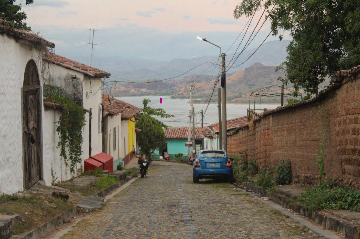
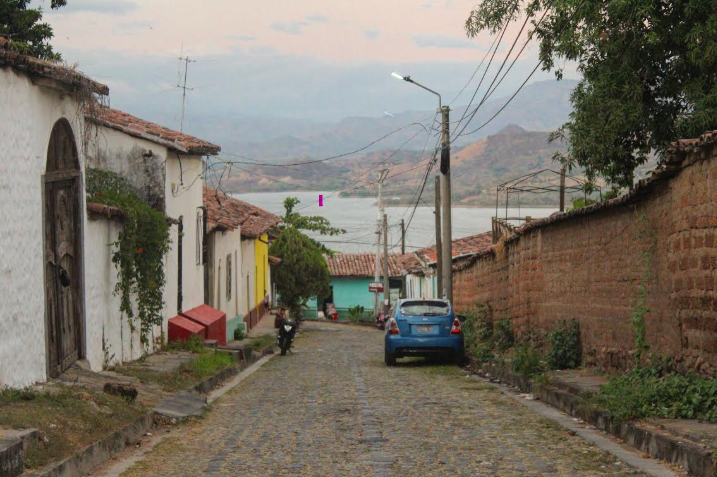

Explore Our Top 10 Destinations


El Tunco & Tamanique
Surf iconic waves and hike to breathtaking waterfalls on this half-day to full-day adventure.
Explore

El Pital Highland Escape
Discover the cool misty highlands, lush trails and panoramic views at El Salvador’s highest peak.
Explore

Ilamatepec Volcano & Lago Coatepeque
Hike an active volcano and relax by the stunning crater lake below.
Explore
Los Chorros Natural Pools
Swim in refreshing natural pools fed by crystal-clear waterfalls.
Explore

Tazumal & Joya de Cerén
Explore ancient Maya ruins and a unique preserved village — a true journey back in time.
Explore

Crater & Capital Culture
Combine nature at El Boquerón with the rich history of San Salvador and its modern national library.
Explore 

Suchitoto Cultural Escape
Charming cobbled streets, colonial architecture and colorful culture in El Salvador’s cultural gem.
Explore

Ruta de las Flores & Café Albania
Discover artisan towns, coffee farms and adrenaline slides on this scenic route.
Explore

Los Cóbanos Reef & Beach
Snorkel vibrant reefs and relax on tranquil beaches in this coastal paradise.
ExploreSurf City 2
Ride the newest waves and enjoy modern boardwalks, dining and surf vibes at Surf City 2.
Explore